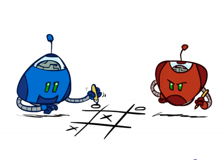
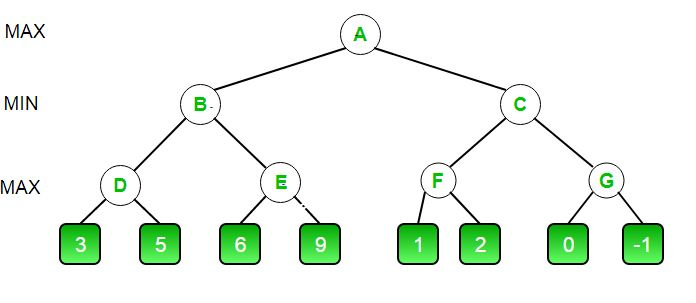
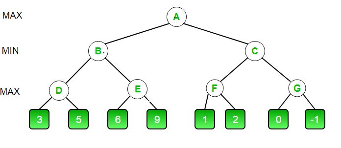

Minimaks algoritam
Igra Iks-oks je:
-nulta suma igra (ako se saberu dobici svih igrača i od te sume oduzmu gubici svih igrača dobija se nula)
-deterministička (bez nasumičnosti)
-za dva igrača
-sa savršenim informacijama (nema skrivenih podataka koje zna samo jedan igrač)
-antagonistička (protivnici su suprotstavljeni),
te se uz pomoć Minimaks algoritma može proračunati način na koji računar neće gubiti igrajući protiv korisnika.

Korisnički interfejs
U kodiranju ovog projekta iskorišćena je već postojeća veb aplikaciia Iks-oks za dva igrača sa Naishare bloga. Estetika je preslikana uz manje izmene, odnosno html i css kodovi su iskopirani uz promenu boje, dok je js kod, iako inspirisan kodom te aplikacije (ista su imena promenljivih), drugačiji po funkcionalnosti. Uveden je niz u koji su smeštene vrednosti polja nakon prvog igračevog poteza (sve vrednosti sem jedne su prazne) ne bi li se funkcionalnost programa odvojila od DOM-a, dok promenljiva brojac pamti broj do sada unetih elemenata u iks oks tablicu. Uvedena su dugmad reset i theory, koja započinju novu igru, odnosno prikazuju teorijski osvrt na aplikaciju.
Funkcija endGame proverava da li je igra gotova i štampa odgovarajuću poruku. U slučaju da postoji pobednik (informaciju o tome dobija kao argument) štampa informacije o njemu, a ako ga nema, a brojač je bar devet štampa da je nerešeno.
Funkcija evaluate
Algoritam se zasniva na činjenici da je najbolji potez jedog igrača istovremeno najgori za drugog igrača, te se potezi ocenjuju tako što pobeda prvog nosi vrednost 100, pobeda drugog -100, a nerešen rezultat 0.
Funkcija evaluate prima indeks poslednje dodatog elementa u niz i proverava da li se u njegovoj vrsti ili koloni nalaze tri iksa ili oksa. U slučaju iksa vraća 100, a u slučaju oksa -100. Na sličan način proverava i obe dijagonale. Ako ne nađe povezane tri iste vraća 0. Nije neophodno proveravati celu tablicu, jer se evaluate poziva svaki put kad se doda neki element, pa je dovoljno proveriti kakvu je on promenu izazvao.
Minimaks algoritam
Ideja je da se najveća vrednost poteza koju igrač može odigrati izračunava scenariom najgoreg slučaja: tražeći najbolji potez uzimamo u obzir svaki mogući potez, proverimo sve moguće poteze suparnika i pronađemo za njega najbolju moguću kombinaciju poteza, što je za prvog igrača najgora moguća kombinacija, odnosno kombinaciju poteza koja daje najmanju vrednost tako što predvidi sledeći potez protivnika itd. Nameće se rekurzivno rešenje.
Nakon što pretpostavi protivnikov potez, prvi igrač bira šta će odigrati da bi dobio najveću moguću vrednost od ponuđenih.
Mana algoritma je što pretpostavlja da će protivnik odigrati svoj najbolji potez, što se ne dešava uvek.
Formalni zapis
Igra se može formalno definisati kao problem pretrage sa sledećim elementima:
S0: početno stanje
PLAYER(s): definiše koji igrač je na potezu u određenom stanju
ACTIONS(s): vraća skup mogućih poteza iz stanja s
RESULT(s,a): definiše rezultat poteza
TERMINAL TEST(s): test koji je tačan ako je igra gotova, terminalna stanja su stanja za koja je terminalan test tačan
UTILITY(s,p): definiše krajnju numeričku vrednost igre
Početno stanje S0, ACTIONS funkcija i RESULT funkcija definišu drvo igre, drvo u kome su čvorovi stanja igre, a grane su potezi.
U slučaju Iks-oksa, iz početnog stanja Maks ima 9 mogućnosti. Igra se nastavlja tako što se Maks i Min smenjuju i Maks bira potez najveće, a Min najmanje vrednosti, sve dok se ne dođe do nekog završnog stanja (tri iste u redu, koloni ili na dijagonali, odnosno sva mesta popunjena). Svaki list raspolaže svojom vrednošću.
Za Iks-oks drvo igre je relativno malo, manje od 9! = 362880 listova, pa je moguće implementirati ga celog, dok se u kompleksnijim igrama, na primer šahu, problem ne može implementirati (prosečan potez ima 35 mogućnosti, a prosečna partija ima 100 poteza).
Minimaks algoritam izvršava DFS algoritam. Ako je dubina drveta m i ima b mogućih poteza u svakom trenutku, onda je vremenska složenost algoritma O(b^m), dok je prostorna složenost O(bm), što je daleko od praktičnog.
Osnovna verzija koda implementirana u funkciji t800 fajla app1.js
Funkcija evaluate nalazi vrednost trenutne matrice na sledeći način: ako je X pobednik vraća 10, ako je O pobednik vraća -10, a ako nema pobednika, vraća 0. Vrednost koju prima je indeks poslednje dodatog elementa i proverava samo polja povezana sa njim, jer je to jedina promena.
Implementacija
Funkcija t800 poziva minimax algoritam, implementiran funkcijama minimalna800 i maksimalna800 koje jedna drugu pozivaju rekurzivno.
Funkcija t800 poziva funkciju minimalna800 sa argumentom -1, a vraća joj se indeks najboljeg poteza koji odigrava (upisuje se i u niz i u Document) i proverava da li je igra gotova.
Funkcija minimalna800 poziva funkciju evaluate za svoj argument, ako je taj argument različiti od -1. U tom sspecijalnom slučaju se radi o prvom pozivu funkcije i ništa još nije upisano u niz, pa ne treba ništa proveravati.
U slučaju da postoji pobednik ili je brojač barem devet izlazi se iz funkcije. U suprotnom se za svako prazno mesto u nizu radi sledeće: upiše se oks u njega, pa se poziva funkcija maksimalna800 i traži najbolji potez koji se čuva u promenljivoj value tako što se nakon svakog poziva proverava da li je vrednost koju funkcija vrati bolja od trenutne vrednosti te promenljive. Svaki put kad se menja value menja se i ind, promenljiva koja predstavlja indeks najboljeg poteza. Na kraju se iz niza brišu dodati elementi. Funkcija vraća value koju koriste ostali pozivi funkcije i ind što koristi funkcija t800 za najbolji indeks.
maksimalna800 funkcioniše analogno funkciji minimalna800 osim što nema promenljive za indeks, jer je indeks najboljeg poteza suparnika nepotreban.
Mane ovog algoritma koje jednostavno možemo ispraviti su:
-računar ne pazi da pobedi u što manje poteza
-ima nepotrebnih izračunavanja
Prvi problem se može rešiti tako što će se uzeti u obzir i dubina stabla u kojoj se nalazimo kad tražimo rešenje, te se odabrati rešenje koje je pliće. Takav kod prikazan je u funkciji t1000. Ta funkcija je identična funkciji t800 osim što poziva unapređeni minimaks prikazan u minimalna1000 i maksimalna1000
Jedina razlika algoritama minimalna800 i maksimalna800 od minimalna1000 i maksimalna1000 je što nove funkcije imaju uvedeni argument dubina koji se svakim rekurzivnim pozivom povećava za 1, te kada funkcija evaluate vrati broj od njega se oduzme trenutna dubina i takav se vraća. Time se postiže da potez računara ne gleda samo da pobedi, već i da pobedi što brže.
Alfa-beta odsecanje
Drugi problem je rešiv jer ne moramo da posmatramo svaki čvor u drvetu, već neke delove drveta možemo odseći. Do toga se dolazi vodeći se sledećim principom: posmatrajmo čvor n u drvetu do kog igrač može stići. Ako igrač ima bolji izbor m u roditeljskom čvoru čvora n ili bilo gde iznad, onda n nikad neće biti dosegnut u igri. Tako da kada imamo dovoljno informacija o n (posmatrajući njegove potomke), tako da dođemo do ovog zaključka, možemo ga odseći.
Sledeća slika pokazuje to na primeru:

Inicijalni poziv kreće od A čvora. On bira veći od vrednosti čvorova B i C, ali prvo poziva B. B bira manji između D i E, prvo pozvavši D. D posmatra svoje levo dete, koje je list, odnosno krajnji čvor. On ima vrednost 3, koju D uzima kao svoju, jer uzima manju od -100000 i 3. Zatim D posmatra svoje desno dete, koje vraća vrednost 5, te uzima veću od vrednosti 3 i 5, što je 5. Vrednost 5 se vraća čvoru B. Zatim B poziva čvor E, tražeći vrednost manju od 5. Zatim E posmatra svoje levo dete koje je 6 i može se zaključiti da će maksimum koji vraća čvor E biti veći ili jednak šest. B će onda birati manji između 5 i broja koji je veći ili jednak šest, i možemo zaključiti da će vratiti broj 5, te ne moramo ni posmatrati ostalu decu čvora E.
Funkcija tx koristi tu logiku koristeći dodatne argumente alpha i beta koji čuvaju najbolji izbor do sada nađen kao maksimum, odnosno najbolji izbor do sada nađen kao minimum. Vrednosti alpha i beta promenljivih se menjaju prolaskom kroz drvo.
Promena u odnosu na prethodnu implementaciju se nalazi u tome što minimalnax i maksimalnax primaju i argumente alpha i beta u kojima se čuvaju do sada pronađeni maksimum odnosno minimum. Funkcija minimalnax prestaje sa daljim rekurzivnim pozivima ako je trenutna vrednost promenljive value manja ili jednaka promenljivoj alfa. Takođe, u petlji proverava da li je promenljiva value manja od beta, te ako jeste beta dobija vrednost value. Analogno funkcioniše funkcija maksimalnax.
Efikasnost alfa-beta odsecanja jako zavisi od rasporeda čvorova. To navodi da se prvo obrade čvorovi koji su najverovatnije najbolji. Kad bi to bilo moguće, tada bi se uz alfa beta odsecanje moglo obraditi O(b^(m/2)) čvorova da bi se odabrao najbolji potez, umesto pređašnjih O(bm). Objašnjenje za to je da prvi potez u pretrazi mora biti onaj najbolji, ali i svaki sledeći potez mora biti takav da pobije sve preostale mogućnosti osim prve. Ako se čvorovi obrađuju u nasumičnom poretku, broj čvorova je O(b^(3m/4)).
Funkcija evaluacija stanja
Minimaks algoritam generiše pretragu za sva moguća stanja igre, dok nam alfa-beta odsecanje omogućuje da odbacimo veliki deo pretrage. Ipak, alfa-beta algoritam mora da ide do listova barem dela stabla, što pretragu može učiniti jako dugom. U slučaju iks-oks igre problem nije veliki, zato što tabla sveukupno ima devet polja na koju je moguće staviti samo jedan znak (iks ili oks), ali kod komplikovanijih igara, poput šaha, gde igrač ima u opticaju mnogo više različitih polja i figura, minimaks algoritam koji bi išao do listova bi bio potpuno neprimenljiv. Umesto toga, program treba da prekida pretragu ranije, te najbolji potez nalazi sa određenom verovatnoćom. Umesto dosadašnje funkcije evaluate treba se koristiti heuristika koja se dizajnira tako što će terminalna stanja posmatrati kao i prethodno korišćena funkcija - pobede moraju biti ocenjene bolje od nerešenog, što mora biti bolje ocenjeno od gubitka. Kod neterminalnih stanja, heuristika treba biti jako zavisna od verovatnoće za pobedu. Takođe, važno je da je izračunavanje brzo, jer je brzina razlog za uvođenje heuristike.
Jasno je da će performanse programa najviše zavisiti od kvaliteta odabrane heuristike.
U ovom slučaju, napravili smo je tako što smo funkciju evaluate zamenili funkcijom evaluate5000, a zatim eksperimentalno pronašli dubinu koja je dovoljna da se očuva savršen protivnik. evaluate5000 funkcioniše kao i evaluate u terminalnim stanjima, ali vraća vrednosti različite od nule i u neterminalnim:
-ako ima jedan X u koloni, vrsti ili dijagonali, a ostala mesta su prazna na sumu doda 5
-ako ima dva X u koloni, vrsti ili dijagonali, a ostala mesta su prazna na sumu doda 20
-ako je X na potezu na sumu doda 10
-analogno za O
Suma je na početku funkcije jednaka nuli.
Zarad lakše implementacije, sabiraju se vrednost ASCII kodova po koloni, vrsti i dijagonali. ASCII vrednost znaka "X" je 88, pa ako se nalaze dva iksa, zbir će biti 176, ako je jedan iks biće 88. Analogno je za oks, čija ASCII vrednost je 79.
Funkcija t5000 poziva funkciju minimalna5000 i maksimalna5000 koje se razliku od prethodnih funkcija samo po tome što pozivaju evaluate5000 i staju kada je dubina jednaka promenljivoj stop koju primaju kao argument, a koja označava dubinu do koje idemo.
Uz korišćenje evaluate5000 dovoljno je da minimaks uđe u dubinu samo za 2 da se očuva savršen protivnik. To se menja u promenljivoj stop funkcije t5000. Iks-oks je dovoljno jednostavna igra da se potrebna dubina može videti na primeru.
Literatura:
-Norvig Russell, Artifivial Intelligence: A Modern Approach
-geeksforgeeks.org
-https://www.naishare.com/blog/how-to-create-a-multiplayer-tic-tac-toe-game-with-html%2C-css-and-javascript
S0: početno stanje
PLAYER(s): definiše koji igrač je na potezu u određenom stanju
ACTIONS(s): vraća skup mogućih poteza iz stanja s
RESULT(s,a): definiše rezultat poteza
TERMINAL TEST(s): test koji je tačan ako je igra gotova, terminalna stanja su stanja za koja je terminalan test tačan
UTILITY(s,p): definiše krajnju numeričku vrednost igre
Početno stanje S0, ACTIONS funkcija i RESULT funkcija definišu drvo igre, drvo u kome su čvorovi stanja igre, a grane su potezi.
U slučaju Iks-oksa, iz početnog stanja Maks ima 9 mogućnosti. Igra se nastavlja tako što se Maks i Min smenjuju i Maks bira potez najveće, a Min najmanje vrednosti, sve dok se ne dođe do nekog završnog stanja (tri iste u redu, koloni ili na dijagonali, odnosno sva mesta popunjena). Svaki list raspolaže svojom vrednošću.
Za Iks-oks drvo igre je relativno malo, manje od 9! = 362880 listova, pa je moguće implementirati ga celog, dok se u kompleksnijim igrama, na primer šahu, problem ne može implementirati (prosečan potez ima 35 mogućnosti, a prosečna partija ima 100 poteza).
Minimaks algoritam izvršava DFS algoritam. Ako je dubina drveta m i ima b mogućih poteza u svakom trenutku, onda je vremenska složenost algoritma O(b^m), dok je prostorna složenost O(bm), što je daleko od praktičnog.
Osnovna verzija koda implementirana u funkciji t800 fajla app1.js
Funkcija evaluate nalazi vrednost trenutne matrice na sledeći način: ako je X pobednik vraća 10, ako je O pobednik vraća -10, a ako nema pobednika, vraća 0. Vrednost koju prima je indeks poslednje dodatog elementa i proverava samo polja povezana sa njim, jer je to jedina promena.
Implementacija
Funkcija t800 poziva minimax algoritam, implementiran funkcijama minimalna800 i maksimalna800 koje jedna drugu pozivaju rekurzivno.Funkcija t800 poziva funkciju minimalna800 sa argumentom -1, a vraća joj se indeks najboljeg poteza koji odigrava (upisuje se i u niz i u Document) i proverava da li je igra gotova.
Funkcija minimalna800 poziva funkciju evaluate za svoj argument, ako je taj argument različiti od -1. U tom sspecijalnom slučaju se radi o prvom pozivu funkcije i ništa još nije upisano u niz, pa ne treba ništa proveravati.
U slučaju da postoji pobednik ili je brojač barem devet izlazi se iz funkcije. U suprotnom se za svako prazno mesto u nizu radi sledeće: upiše se oks u njega, pa se poziva funkcija maksimalna800 i traži najbolji potez koji se čuva u promenljivoj value tako što se nakon svakog poziva proverava da li je vrednost koju funkcija vrati bolja od trenutne vrednosti te promenljive. Svaki put kad se menja value menja se i ind, promenljiva koja predstavlja indeks najboljeg poteza. Na kraju se iz niza brišu dodati elementi. Funkcija vraća value koju koriste ostali pozivi funkcije i ind što koristi funkcija t800 za najbolji indeks.
maksimalna800 funkcioniše analogno funkciji minimalna800 osim što nema promenljive za indeks, jer je indeks najboljeg poteza suparnika nepotreban.
Mane ovog algoritma koje jednostavno možemo ispraviti su:
-računar ne pazi da pobedi u što manje poteza
-ima nepotrebnih izračunavanja
Prvi problem se može rešiti tako što će se uzeti u obzir i dubina stabla u kojoj se nalazimo kad tražimo rešenje, te se odabrati rešenje koje je pliće. Takav kod prikazan je u funkciji t1000. Ta funkcija je identična funkciji t800 osim što poziva unapređeni minimaks prikazan u minimalna1000 i maksimalna1000
Jedina razlika algoritama minimalna800 i maksimalna800 od minimalna1000 i maksimalna1000 je što nove funkcije imaju uvedeni argument dubina koji se svakim rekurzivnim pozivom povećava za 1, te kada funkcija evaluate vrati broj od njega se oduzme trenutna dubina i takav se vraća. Time se postiže da potez računara ne gleda samo da pobedi, već i da pobedi što brže.
Alfa-beta odsecanje
Drugi problem je rešiv jer ne moramo da posmatramo svaki čvor u drvetu, već neke delove drveta možemo odseći. Do toga se dolazi vodeći se sledećim principom: posmatrajmo čvor n u drvetu do kog igrač može stići. Ako igrač ima bolji izbor m u roditeljskom čvoru čvora n ili bilo gde iznad, onda n nikad neće biti dosegnut u igri. Tako da kada imamo dovoljno informacija o n (posmatrajući njegove potomke), tako da dođemo do ovog zaključka, možemo ga odseći.
Sledeća slika pokazuje to na primeru:

Inicijalni poziv kreće od A čvora. On bira veći od vrednosti čvorova B i C, ali prvo poziva B. B bira manji između D i E, prvo pozvavši D. D posmatra svoje levo dete, koje je list, odnosno krajnji čvor. On ima vrednost 3, koju D uzima kao svoju, jer uzima manju od -100000 i 3. Zatim D posmatra svoje desno dete, koje vraća vrednost 5, te uzima veću od vrednosti 3 i 5, što je 5. Vrednost 5 se vraća čvoru B. Zatim B poziva čvor E, tražeći vrednost manju od 5. Zatim E posmatra svoje levo dete koje je 6 i može se zaključiti da će maksimum koji vraća čvor E biti veći ili jednak šest. B će onda birati manji između 5 i broja koji je veći ili jednak šest, i možemo zaključiti da će vratiti broj 5, te ne moramo ni posmatrati ostalu decu čvora E.
Funkcija tx koristi tu logiku koristeći dodatne argumente alpha i beta koji čuvaju najbolji izbor do sada nađen kao maksimum, odnosno najbolji izbor do sada nađen kao minimum. Vrednosti alpha i beta promenljivih se menjaju prolaskom kroz drvo.
Promena u odnosu na prethodnu implementaciju se nalazi u tome što minimalnax i maksimalnax primaju i argumente alpha i beta u kojima se čuvaju do sada pronađeni maksimum odnosno minimum. Funkcija minimalnax prestaje sa daljim rekurzivnim pozivima ako je trenutna vrednost promenljive value manja ili jednaka promenljivoj alfa. Takođe, u petlji proverava da li je promenljiva value manja od beta, te ako jeste beta dobija vrednost value. Analogno funkcioniše funkcija maksimalnax.
Efikasnost alfa-beta odsecanja jako zavisi od rasporeda čvorova. To navodi da se prvo obrade čvorovi koji su najverovatnije najbolji. Kad bi to bilo moguće, tada bi se uz alfa beta odsecanje moglo obraditi O(b^(m/2)) čvorova da bi se odabrao najbolji potez, umesto pređašnjih O(bm). Objašnjenje za to je da prvi potez u pretrazi mora biti onaj najbolji, ali i svaki sledeći potez mora biti takav da pobije sve preostale mogućnosti osim prve. Ako se čvorovi obrađuju u nasumičnom poretku, broj čvorova je O(b^(3m/4)).
Funkcija evaluacija stanja
Minimaks algoritam generiše pretragu za sva moguća stanja igre, dok nam alfa-beta odsecanje omogućuje da odbacimo veliki deo pretrage. Ipak, alfa-beta algoritam mora da ide do listova barem dela stabla, što pretragu može učiniti jako dugom. U slučaju iks-oks igre problem nije veliki, zato što tabla sveukupno ima devet polja na koju je moguće staviti samo jedan znak (iks ili oks), ali kod komplikovanijih igara, poput šaha, gde igrač ima u opticaju mnogo više različitih polja i figura, minimaks algoritam koji bi išao do listova bi bio potpuno neprimenljiv. Umesto toga, program treba da prekida pretragu ranije, te najbolji potez nalazi sa određenom verovatnoćom. Umesto dosadašnje funkcije evaluate treba se koristiti heuristika koja se dizajnira tako što će terminalna stanja posmatrati kao i prethodno korišćena funkcija - pobede moraju biti ocenjene bolje od nerešenog, što mora biti bolje ocenjeno od gubitka. Kod neterminalnih stanja, heuristika treba biti jako zavisna od verovatnoće za pobedu. Takođe, važno je da je izračunavanje brzo, jer je brzina razlog za uvođenje heuristike.
Jasno je da će performanse programa najviše zavisiti od kvaliteta odabrane heuristike.
U ovom slučaju, napravili smo je tako što smo funkciju evaluate zamenili funkcijom evaluate5000, a zatim eksperimentalno pronašli dubinu koja je dovoljna da se očuva savršen protivnik. evaluate5000 funkcioniše kao i evaluate u terminalnim stanjima, ali vraća vrednosti različite od nule i u neterminalnim:
-ako ima jedan X u koloni, vrsti ili dijagonali, a ostala mesta su prazna na sumu doda 5
-ako ima dva X u koloni, vrsti ili dijagonali, a ostala mesta su prazna na sumu doda 20
-ako je X na potezu na sumu doda 10
-analogno za O
Suma je na početku funkcije jednaka nuli.
Zarad lakše implementacije, sabiraju se vrednost ASCII kodova po koloni, vrsti i dijagonali. ASCII vrednost znaka "X" je 88, pa ako se nalaze dva iksa, zbir će biti 176, ako je jedan iks biće 88. Analogno je za oks, čija ASCII vrednost je 79.
Funkcija t5000 poziva funkciju minimalna5000 i maksimalna5000 koje se razliku od prethodnih funkcija samo po tome što pozivaju evaluate5000 i staju kada je dubina jednaka promenljivoj stop koju primaju kao argument, a koja označava dubinu do koje idemo.
Uz korišćenje evaluate5000 dovoljno je da minimaks uđe u dubinu samo za 2 da se očuva savršen protivnik. To se menja u promenljivoj stop funkcije t5000. Iks-oks je dovoljno jednostavna igra da se potrebna dubina može videti na primeru.
Literatura:
-Norvig Russell, Artifivial Intelligence: A Modern Approach
-geeksforgeeks.org
-https://www.naishare.com/blog/how-to-create-a-multiplayer-tic-tac-toe-game-with-html%2C-css-and-javascript
Jasno je da će performanse programa najviše zavisiti od kvaliteta odabrane heuristike. U ovom slučaju, napravili smo je tako što smo funkciju evaluate zamenili funkcijom evaluate5000, a zatim eksperimentalno pronašli dubinu koja je dovoljna da se očuva savršen protivnik. evaluate5000 funkcioniše kao i evaluate u terminalnim stanjima, ali vraća vrednosti različite od nule i u neterminalnim:
-ako ima jedan X u koloni, vrsti ili dijagonali, a ostala mesta su prazna na sumu doda 5
-ako ima dva X u koloni, vrsti ili dijagonali, a ostala mesta su prazna na sumu doda 20
-ako je X na potezu na sumu doda 10
-analogno za O
Suma je na početku funkcije jednaka nuli. Zarad lakše implementacije, sabiraju se vrednost ASCII kodova po koloni, vrsti i dijagonali. ASCII vrednost znaka "X" je 88, pa ako se nalaze dva iksa, zbir će biti 176, ako je jedan iks biće 88. Analogno je za oks, čija ASCII vrednost je 79.
Funkcija t5000 poziva funkciju minimalna5000 i maksimalna5000 koje se razliku od prethodnih funkcija samo po tome što pozivaju evaluate5000 i staju kada je dubina jednaka promenljivoj stop koju primaju kao argument, a koja označava dubinu do koje idemo.
Uz korišćenje evaluate5000 dovoljno je da minimaks uđe u dubinu samo za 2 da se očuva savršen protivnik. To se menja u promenljivoj stop funkcije t5000. Iks-oks je dovoljno jednostavna igra da se potrebna dubina može videti na primeru.